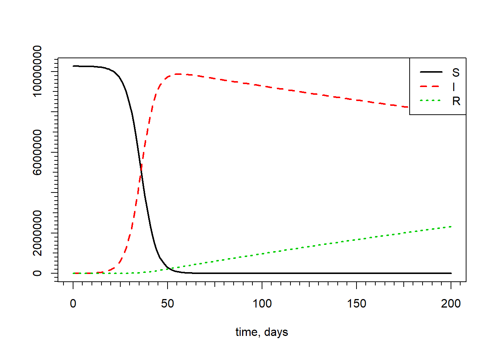
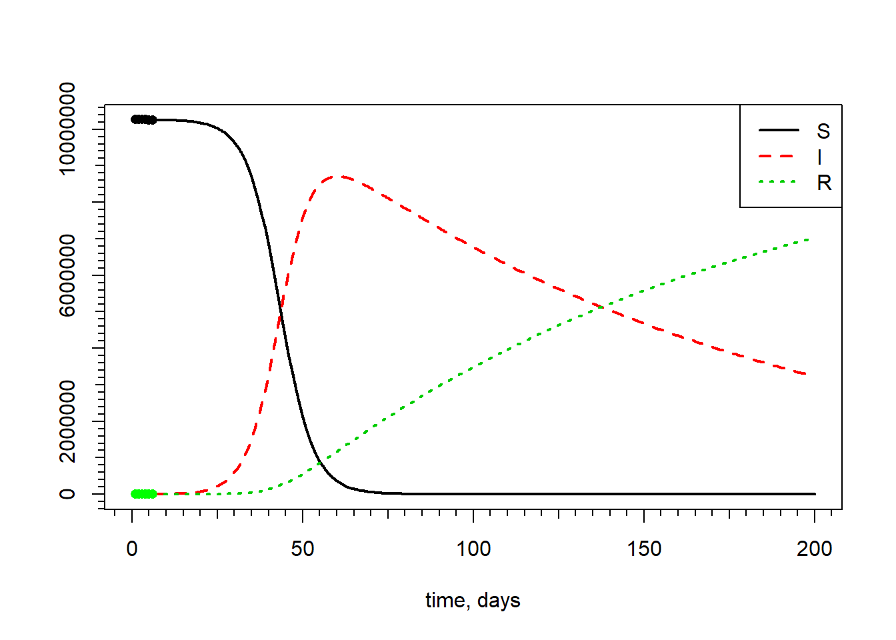
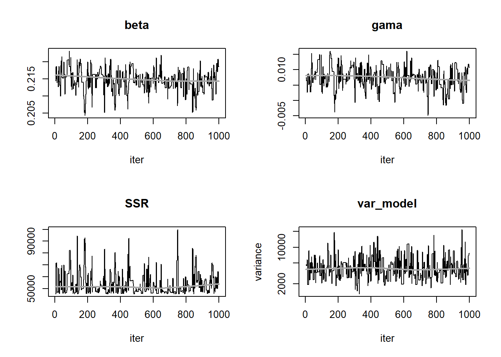
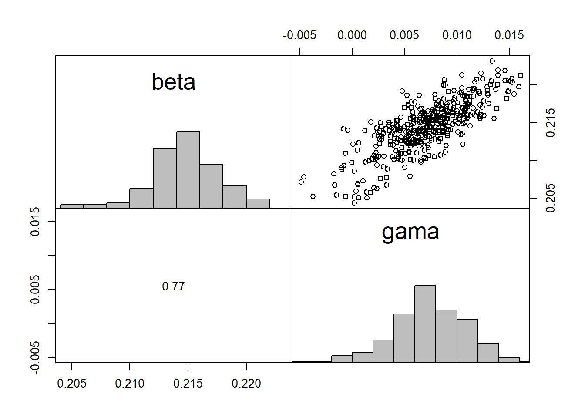
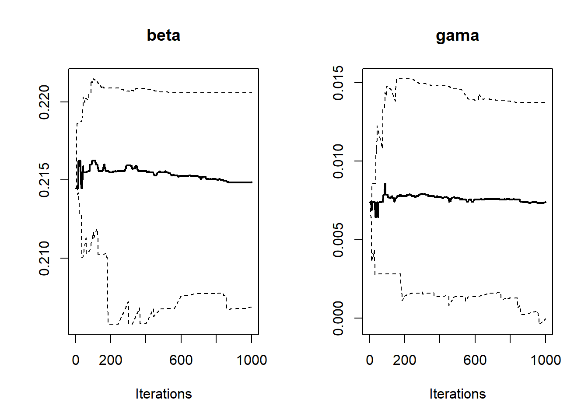

2.10 Lesson 6
2020-03-30
2.10.1 SIR model
The SIR MODEL (code given by the professor)
load the packages
read the data and set population for Portugal
N = 10260906
data = read.csv("2.UploadedData/CasesP.csv")
data = data.frame(time=0:(dim(data)[1]-1),I = data[,1],R=data[,2],S=N-data[,1]-data[,2])
str(data)## 'data.frame': 25 obs. of 4 variables:
## $ time: int 0 1 2 3 4 5 6 7 8 9 ...
## $ I : int 2 4 6 9 13 21 30 39 41 59 ...
## $ R : int 0 0 0 0 0 0 0 0 0 0 ...
## $ S : num 10260904 10260902 10260900 10260897 10260893 ...using 1st day with a recover as initial values
iR = min(which(data[,3]>10))
data=data[-(1:iR),]
data[,1]=data[,1]-data[1,1]
S0 = data$S[1]
I0 = data$I[1]
R0 = data$R[1]
S1 = data$S[2]
I1 = data$I[2]
R1 = data$R[2]
S0_ = S1-S0
beta0 = -(S0_*N)/(I0*S0)
I0_ = I1-I0
R0_ = R1-R0
gama0 = R0_/I0the SIR model
SIR <- function(time, state, pars) { # returns rate of change
with(as.list(c(state, pars)), {
dS <- -beta*S*I/N
dI <- beta *S*I/N - gama*I
dR <- gama*I
return(list(c(dS, dI,dR)))
})
}Initial Parameters
differential equations
plot the model
matplot(out[,1], out[,-1], type = "l", lty = 1:3, lwd = 2,
col = 1:3, xlab = "time, days", ylab = "")
legend("topright", c("S", "I", "R"),
lty = 1:3, lwd = 2,col=1:4)
minor.tick(2,2,0.7)
minor.tick(10,10,0.5)
Fitting the SIR model to data
modCost - Calculates the discrepancy Of a model solution with observations
tout <- seq(0,200,by=1) ## output times
Objective <- function(x, parset = names(x)) {
pars[parset] <- x
tout <- seq(0,200,by=1) ## output times
out <- ode(y = state, times = tout, func = SIR, parms = pars)
## Model cost
return(modCost(obs = data, model = out))
}modFit - Constrained fitting Of a model to data
fitted parameters and predicted data
## beta gama
## 0.214469189 0.007391927plot fitted model
matplot(out2[,1], out2[,-1], type = "l", lty = 1:3, lwd = 2,
col = 1:3, xlab = "time, days", ylab = "")
legend("topright", c("S", "I", "R"),
lty = 1:3, lwd = 2,col=1:3)
minor.tick(10,10,0.5)
minor.tick(2,2,0.7)
points(data$I,pch=16,col="red")
points(data$R,pch=16,col="green")
points(data$S,pch=16,col="black")
zoom in real data
matplot(out2[,1], out2[,-1], type = "l", lty = 1:3, lwd = 2,
col = 1:3, xlab = "time, days", ylab = "",ylim=c(0,10000),xlim=c(0,50))
legend("topright", c("S", "I", "R"),
lty = 1:3, lwd = 2,col=1:3)
minor.tick(10,10,0.5)
minor.tick(2,2,0.7)
points(data$I,pch=16,col="red")
points(data$R,pch=16,col="green")
points(data$S,pch=16,col="black")
2.10.2 Markov chain Monte Carlo
resume fitted model
##
## Parameters:
## Estimate Std. Error t value Pr(>|t|)
## beta 0.214469 0.002528 84.830 <0.0000000000000002 ***
## gama 0.007392 0.002891 2.557 0.0211 *
## ---
## Signif. codes: 0 '***' 0.001 '**' 0.01 '*' 0.05 '.' 0.1 ' ' 1
##
## Residual standard error: 53.38 on 16 degrees of freedom
##
## Parameter correlation:
## beta gama
## beta 1.0000 0.7647
## gama 0.7647 1.0000see all the information on Fit
## $residuals
## I I I I I I
## 0.000000 -25.547946 -123.374023 20.091494 -65.009195 59.864614
## R R R R R R
## 0.000000 8.512436 3.443102 1.348192 10.911638 -3.025298
## S S S S S S
## 0.000000 17.035510 119.930921 -21.439687 54.097556 -56.839315
##
## $residualVariance
## [1] 2849.524
##
## $sigma
## [1] 53.38093
##
## $modVariance
## [1] 2532.91
##
## $df
## [1] 2 16
##
## $cov.unscaled
## beta gama
## beta 0.000000002243130 0.000000001961327
## gama 0.000000001961327 0.000000002932503
##
## $cov.scaled
## beta gama
## beta 0.000006391851 0.000005588849
## gama 0.000005588849 0.000008356237
##
## $info
## [1] 1
##
## $niter
## [1] 4
##
## $stopmess
## [1] "ok"
##
## $par
## Estimate Std. Error t value Pr(>|t|)
## beta 0.214469189 0.002528211 84.830412 0.0000000000000000000001153309
## gama 0.007391927 0.002890716 2.557127 0.0210969571663339600098296955save initials values and run MCMC
Var0 <- SF$modVariance
covIni <- SF$cov.scaled *2.4^2/2
MCMC <- modMCMC(p = coef(Fit), f = Objective, jump = covIni,var0 = Var0, wvar0 = 1)## number of accepted runs: 408 out of 1000 (40.8%)plot iterations’ results

and correlation between parameters

plot of sample quantiles’ evolution as a function of the number of iterations

compare the covariances based on generated parameters with the ones from the fit:
| beta | gama | |
|---|---|---|
| beta | 0.0000093 | 0.0000080 |
| gama | 0.0000080 | 0.0000115 |
| beta | gama | |
|---|---|---|
| beta | 0.0000184 | 0.0000161 |
| gama | 0.0000161 | 0.0000241 |